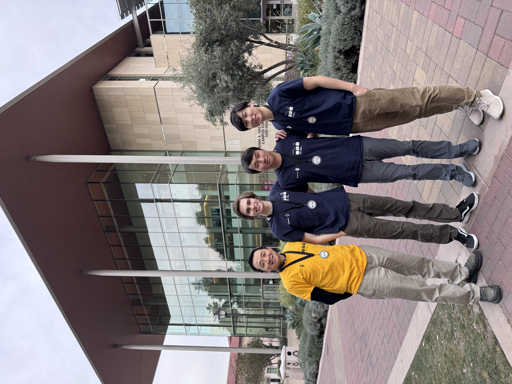
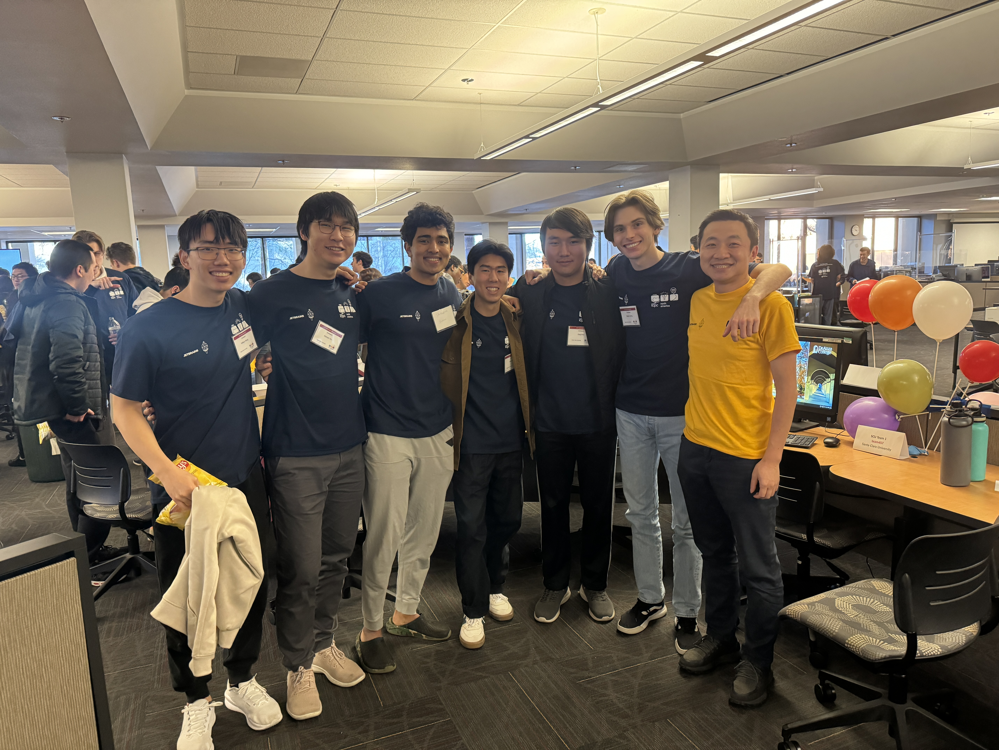
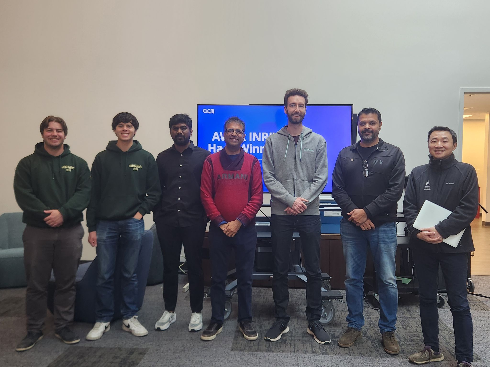
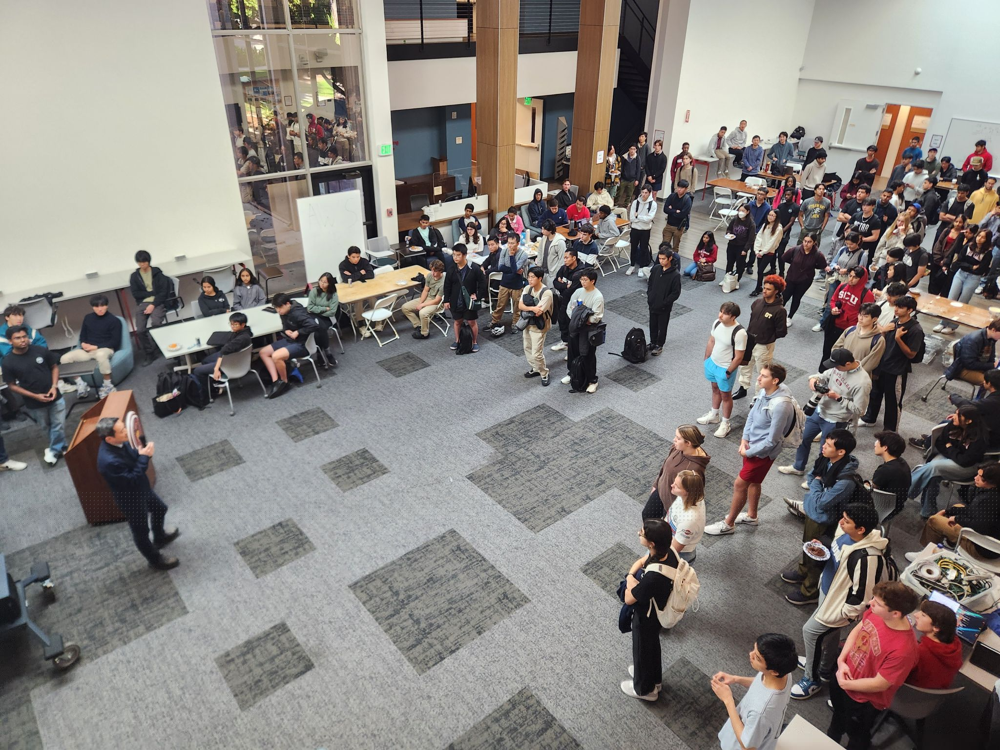

Yi Fang
Sant Clara University
500 El Camino Real
Santa Clara, CA 95053
Office: Bergin 104
Email: yfang@scu.edu
Contact Information >
Sant Clara University
500 El Camino Real
Santa Clara, CA 95053
Office: Bergin 104
Email: yfang@scu.edu
Contact Information >
I am fortunate to work with talented and dedidated students at SCU and beyond.
Current Students
Alumni
- Yuan Wang (PhD 2024, Pinterest), Fairness and Bias of Machine Learning in Search and Ranking
- Eyor Alemayehu (PhD 2023, Amazon AWS), A Submodular Optimization Framework for Imbalanced Text Classification with Data Augmentation
- NagaArchana Godavarthy (PhD 2022), Personalized Memory Transfer for Conversational Recommendation Systems
- Suthee Chaidaroon (PhD 2020, Amazon AI), Deep Generative Models for Text Semantic Hashing
- Travis Ebesu (PhD 2019, Pinterest - Machine Learning), Deep Learning for Recommender Systems
- Yogesh Jhamb (PhD 2018, Adobe - Machine Learning), Personalized Social Event Recommendation
- Axel Perez (MS 2021, Google), Player2Vec: Representation Learning of NBA Players
- Glen Chandler (MS 2020, Lockheed Martin Space), Deep Reinforcement Learning for Dialogue Systems with Dynamic User Goals
- Parth Shah (MS 2020, Walmart Global Tech), Housing Price Prediction: Advanced Regression Techniques
- Zhiyuan Peng (MS 2020, PhD student at SCU), Classification and Named Entity Recognition of Short Text
- Yuan Wang (MS 2015, PhD student at SCU), A Deep Learning Approach to Generate Efficient and Semantic Location Embedding
- Miao Jiang (MS 2014, PhD student at Indiana University), User Click Prediction in Personalized Job Recommendation
- Juan Hu (MS 2013, Meta), Topical Authority Propagation on Microblogs
ACM Club
I am the faculty advisor for ACM Club, the largest computing student organization at SCU. The Club presents informative workshops, brings guest speakers, and hosts fun weekly meetings, as well as hackathons (AI Hackathon and Hack for Humanity) and competitive programming.
I have had the privilege of serving as the coach since SCU's inaugural participation in the ICPC International Collegiate Programming Contest in 2023. We are proud to have earned several medals along the way.
We strongly encourage and welcome students of all backgrounds, majors, and skill levels to join the Club and share our love for technology!



